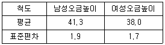

인간공학기사 (2016-08-21 기출문제)
1과목: 인간공학개론
1. Fitts의 법칙에 관한 설명으로 맞는 것은?
- 표적과 이동거리는 작업의 난이도와 소요이동시간과 무관하다.
- 표적이 클수록, 이동거리가 짧을수록 작업의 난이도와 소요이동시간이 감소한다.
- 표적이 클수록, 이동거리가 길수록 작업의 난이도와 소요시간이 증가한다.
- 표적이 작을수록 이동거리가 짧을수록 작업의 난이도와 소요시간이 증가한다.
(정답률: 86%)

2. 인체측정의 구조적 치수 측정에 관한 설명으로 틀린 것은?
- 형태학적 측정을 의미한다.
- 나체 측정을 원칙으로 한다.
- 마틴식 인체측정 장치를 사용한다.
- 상지나 하지의 운동범위를 측정한다.
(정답률: 79%)
3. 청각적 표시장치에 관한 설명으로 맞는 것은?
- 청각 신호의 지속시간은 최대 0.3초 이내로 한다.
- 청각 신호의 차원은 세기, 빈도, 지속기간으로 구성된다.
- 즉각적인 행동이 요구될 때에는 청각적 표시장치보다 시각적 표시장치를 사용하는 것이 좋다.
- 신호의 검출도를 높이기 위해서는 소음의 세기가 높은 영역의 주파수로 신호의 주파수를 바꾼다.
(정답률: 68%)
4. 인간-기계 시스템 설계 시 고려사항으로 적절하지 않은 것은?
- 시스템 설계 시 동작경제의 원칙에 만족되도록 고려하여야 한다.
- 대상 시스템이 배치될 환경조건이 인간의 한계치를 만족하는가의 여부를 조사한다.
- 단독의 기계에 대하여 수행해야 할 배치는 기계적 성능이 최대치가 되도록 해야 한다.
- 시스템 설계의 성공적인 완료를 위해 조작의 능률성, 보족의 용이성, 제작의 결제성 측면이 검토되어야 한다.
(정답률: 74%)
5. 남녀 공용으로 사용하는 의자의 높이를 조절식으로 설계하고자 한다. 표를 참고하여 좌판높이의 조절범위에 대한 기준값으로 가장 적당한 것은? (단, 5퍼센타일 계수는 1.645이다.)

- (38.0-1.7×1.645) ~ (41.3+1.9×1.645)
- (38.0+1.7×1.645) ~ (41.3+1.9×1.645)
- (38.0-1.7×1.645) ~ (41.3-1.9×1.645)
- (38.0+1.7×1.645) ~ (41.3-1.9×1.645)
(정답률: 70%)
6. 일반적인 시스템의 설계과정을 맞게 나열한 것은?
- 목표 및 성능명세 결정 → 체계의 정의 → 기본설계 → 계면설계 → 촉진물 설계 → 시험 및 평가
- 체계의 정의 → 목표 및 성능명세 결정 → 기본설계 → 계면설계 → 촉진물 설계 → 시험 및 평가
- 목표 및 성능명세 결정 → 체계의 정의 → 계면설계 → 촉진물 설계 → 기본설계 → 시험 및 평가
- 체계의 정의 → 목표 및 성능명세 결정 → 계면설계 → 촉진물 설계 → 기본설계 → 시험의 평가
(정답률: 66%)
7. 제어 시스템에서 제어장치에 의해 피제어 요소가 동작하지 않는 0점(null point) 주위에서의 제어동작 공간을 지칭하는 용어는?
- 백래쉬(back lash)
- 사공간(dead space)
- 0점공간(null space)
- 조정공간(adjustment space)
(정답률: 72%)
8. 인간의 신뢰도가 70%, 기계의 신뢰도가 90%이면 인간과 기계가 직렬체계로 작업할 때의 신뢰도는 몇 % 인가?
- 30%
- 54%
- 63%
- 98%
(정답률: 90%)
9. 인간이 3차원 공간에서 깊이(depth)를 지각하기 위해 사용하는 단서로써 적절하지 않은 것은?
- 상대적 크기(relative size)
- 시각적 탐색(visual search)
- 직선조망(linear perspective)
- 빛과 그림자(light and shadowing)
(정답률: 51%)
10. 작업대 공간 배치의 원리와 거리가 먼 것은?
- 기능성의 원리
- 사용순서의 원리
- 중요도의 원리
- 오류방지의 원리
(정답률: 88%)
11. 음의 한 성분이 다른 성분에 대한 귀의 감수성을 감소시키는 상황을 무슨 효과라 하는 가?
- 기피(avoid)
- 방해(interrupt)
- 밀폐(sealing)
- 은폐(masking)
(정답률: 91%)
12. 폰(phon)에 관한 설명으로 틀린 것은?
- 1000Hz대의 20dB크기의 소리는 20phon이다.
- 상이한 음의 상대적 크기에 대한 정보는 나타내지 못한다.
- 40dB의 1000Hz순음을 기준으로 하여 다른 음의 상대적인 크기를 설정하는 척도의 단위이다.
- 1000Hz의 주파수를 기준으로 각 주파수별 동일한 음량을 주는 음압을 평가하는 척도의 단위이다.
(정답률: 48%)
13. 인간의 기억체계에 관한 설명으로 맞는 것은?
- 단기 기억은 자극이 사라진 후에도 오랫동안 감각이 지속되도록 하는 역할을 한다.
- 작업 기억 내에 정보를 저장하기 위해서는 정보의 의미적 코드화가 선행되어야 한다.
- 작업 기억은 감각저장소로부터 전이된 정보를 일시적으로 기억하기 위한 저장소의 역할을 한다.
- 인간의 기억체계는 4개의 하부체계 혹은 과정(단기 기억, 감각 저장, 작업 기억, 장기 기억)으로 개념화되어 왔다.
(정답률: 46%)
14. 시(視)감각 체계에 관한 설명으로 틀린 것은?
- 동공은 조도가 낮을 때는 많은 빛을 통과시키기 위해 확대된다.
- 1디옵터는 1미터 거리에 있는 물체를 보기 위해 요구되는 조절능(調節能)이다.
- 망막의 표면에는 빛을 감지하는 광수용기인 원추체와 간상체가 분포되어 있다.
- 안구의 수정체는 공막에 정확한 이미지가 맺히도록 형태를 스스로 조절하는 일을 담당한다.
(정답률: 68%)
15. 누름단추식 전화기를 사용하여 7자리를 암기하여 누를 경우 어떻게 나누어 누르는 것이 가장 효과적인가?
- 194-3421
- 19-43421
- 194342-1
- 1-943421
(정답률: 92%)
16. 광삼현상(irradiation)에 관한 설명으로 맞는 것은?
- 조도가 낮은 표시장치에서 더욱 많이 나타난다.
- 암조응이 필요한 경우에는 흰 바탕에 검은 글자가 바람직하다.
- 검은 모양이 주위의 흰 배경으로 번지어 보이는 현상을 말한다.
- 검은 바탕에 흰 글자의 획폭은 흰 바탕의 검은 글자보다 가늘게 할 수 있다.
(정답률: 58%)
17. 기분(표준)자극 100에 대한 최소변화감지역(JND)이 5라면 Weber비는 얼마인가?
- 0.02
- 0.⑤
- 20
- 50
(정답률: 68%)
18. 인간공학의 정의에 대한 설명으로 틀린 것은?
- 인간을 작업에 맞추는 학문이다.
- 인간활동의 최적화를 연구하는 학문이다.
- 인간능력, 인간한계, 그리고 인간특성을 설계에 응용하는 학문이다.
- 기계와 그 조작 및 환경조건을 인간의 특성 및 능력과 한계에 잘 조화되도록 하는 수단을 연구하는 학문이다.
(정답률: 91%)
19. 사용성 평가에 주로 사용되는 평가척도로 적합하지 않은 것은?
- 과제물 내용
- 에러의 빈도
- 과제의 수행시간
- 사용자의 주관적 만족도
(정답률: 74%)
20. 정보이론에 있어 정보량에 관한 설명으로 틀린 것은?
- 단위는 bit이다.
- 2bit는 두 가지 동일 확률하의 독립사건에 대한 정보량이다.
- N을 대안의 수라 할 때, 정보량은 log2N으로 구할 수 있다.
- 출현 가능성이 동일하지 않은 사건의 확률을 p라 할 때, 정보량은 log21/p로 나타낸다.
(정답률: 71%)
2과목: 작업생리학
21. 인체의 척추를 구성하고 있는 뼈 가운데 경추, 흉추, 요추의 합은 몇 개인가?
- 19개
- 21개
- 24개
- 26개
(정답률: 77%)
22. 노화로 인한 시각능력의 감소 시 조명수준을 결정할 때 고려해야 될 사항과 가장 거리가 먼 것은?
- 직무의 대비(對比) 뿐만 아니라 휘광(glare)의 통제도 아주 중요하다.
- 느려진 동공 반응은 과도(過渡, transient) 적응 효과의 크기와 기간을 증가시킨다.
- 색 감지를 위해서는 색을 잘 표현하는 전대역(full-spectrum) 광원(光源)이 추천된다.
- 과도 적응 문제와 눈의 불편을 줄이기 위해서는 보다 높은 광도비(光度比)가 필요하다.
(정답률: 87%)
23. 순환기계 혈액의 기능에 해당하지 않는 것은?
- 운반작용
- 연하작용
- 조절작용
- 출혈방지
(정답률: 71%)
24. 조도가 균일하고, 눈부심이 적지만 설치비용이 많은 소요되는 조명방식은?
- 직접조명
- 간접조명
- 반사조명
- 국소조명
(정답률: 89%)
25. 생체역학적 모형의 효용성으로 가장 적합한 것은?
- 작업 시 사용되는 근육 파악
- 작업에 대한 생리적 부하 평가
- 작업의 병리학적 영향 요소 파악
- 작업 조건에 따른 역학적 부하 추정
(정답률: 57%)
26. 전체 환기가 필요한 경우로 적절하지 않은 것은?
- 유해물질의 독성이 적을 때
- 실내에 오염물 발생이 많지 않을 때
- 실내 오염 배출원이 분산되어 있을 때
- 실내에 확산된 오염물의 농도가 전체로 보아 일정하지 않을 때
(정답률: 81%)
27. 일반적으로 소음계는 3가지 특성에서 음압을 특정할 수 있도록 보정되어 있는데 A특성치란 40phon의 등음량 곡선과 비슷하게 보정하여 특정한 음압수준을 말한다. B특성치와 C특성치는 각각 몇 phon의 등음량곡선과 비슷하게 보정하여 특정한 값을 말하는가?
- B특성치 : 50phon, C특성치 : 80phon
- B특성치 : 60phon, C특성치 : 100phon
- B특성치 : 70phon, C특성치 : 100phon
- B특성치 : 80phon, C특성치 : 150phon
(정답률: 70%)
28. 가동성 관절의 종류와 그 예(例)가 잘못 연결된 것은?
- 중쇠 관절(pivit joint) - 수근중수 관절
- 타원 관절(elipsoid joint) - 손목뼈 관절
- 절구 관절(ball-and-socket joint) - 대퇴 관절
- 경첩 관절(hinge joint) - 손가락 뼈 사이
(정답률: 54%)
29. 열교환에 영향을 미치는 요소가 아닌 것은?
- 기압
- 기온
- 습도
- 공기의 유동
(정답률: 78%)
30. 장력이 생기는 근육의 실질적인 수축성 단위(contractility unit)는?
- 근섬유(muscle fiber)
- 운동단위(motor unit)
- 근원세사(myofilament)
- 근섬유분절(sarcomere)
(정답률: 55%)
31. 어떤 작업에 대해서 10분간 산소소비량을 측정한 결과 100리터 배기량에 산소가 15%, 이산화탄소가 6%로 분석되었다. 분당 산소소비량은?
- 0.4L/분
- 0.6L/분
- 0.8L/분
- 1.0L/분
(정답률: 59%)
32. 어떤 작업자의 평균심박수는 90회/분이며 일박출량(stroke volume)이 70mL로 측정되었다면 이 작업자의 심박출량(cardiacoutput)은 얼마인가?
- 0.8L/mm
- 1.3L/mm
- 6.3L/mm
- 378.0L/mm
(정답률: 68%)
33. 막 전위차 발생 시 나타나는 현상이 아닌 것은?
- 평형상태에서 전위치는 -90mV이다.
- K+이온은 단백질 이온과는 달리 세포막을 투과할 수 있다.
- 자극 발생 시 세포막은 K+이온은 투과시키고 Na+이온을 투과시키지 않는다.
- 막 내부의 전위차가 음이기 때문에 신경세포내의 K+이온의 농도는 외부 농도의 약 30배가 된다.
(정답률: 62%)
34. 접멸융합주파수(critical flicker fusion)에 대해 설명한 것 중 틀린 것은?
- 중추신경계의 정신피로의 척도로 사용된다.
- 작업시간이 경과할수록 CFF치는 낮아진다.
- 쉬고 있을 때 CFF치는 대략 15~30Hz이다.
- 마음이 긴장되었을 때나 머리가 맑을 때의 CFF치는 높아진다.
(정답률: 58%)
35. 근육유형 중에서 의식적으로 통재가 가능한 근육은?
- 평활근
- 골격근
- 심장근
- 모든 근육은 의식적으로 통제가능하다.
(정답률: 80%)
36. 심박출량을 증가시키는 요인으로 볼 수 없는 것은?
- 휴식시간
- 근육활동의 증가
- 덥거나 습한 작업환경
- 흥분된 상태나 스트레스
(정답률: 92%)
37. 육체적 활동의 정적 부하에 대한 스트레인(strain)을 측정하는데 가장 적합한 것은?
- 산소소비량
- 뇌전도(EEG)
- 심박수(HR)
- 근전도(EMG)
(정답률: 61%)
38. 소음에 관한 정의에 있어 “강렬한 소음작업”이라 함은 얼마 이상의 소음이 1일 8시간 이상 발생하는 작업을 의미하는가?
- 85데시벨 이상
- 90데시벨 이상
- 95데시벨 이상
- 100데시벨 이상
(정답률: 75%)
39. 진동이 인체에 미치는 영향이 아닌 것은?
- 심박수 감소
- 산소소비량 증가
- 근장력 증가
- 말초혈관의 수축
(정답률: 82%)
40. 근력(strength) 형태 중 근육이 등척성 수축을 하는 것에 해당하는 근력은?
- 정적 근력(static strength)
- 등장성 근력(isotonic strength)
- 등속성 근력(isokinetic strength)
- 등관성 근력(isoinertial strength)
(정답률: 77%)
3과목: 산업심리학 및 관계법규
41. 산업재해 예방을 위한 안전대책 중 3E에 해당하지 않는 것은?
- 교육적 대책(Education)
- 공학적 대책(Engineering)
- 환경적 대책(Environment)
- 관리적 대책(Enforcement)
(정답률: 80%)
42. 관리 그리드 이론(managerial grid theory)에 관한 설명으로 틀린 것은?
- 블레이크와 모우톤이 구조주도적-배려적 리더십 개념을 연장시켜 정립한 이론이다.
- 인기형은 (9,1)형으로 인간에 대한 관심은 매우 높은데 반해 과업에 관한 관심은 낮은 리더십 유형이다.
- 중도형은 (5,5)형으로 과업과 인간관계 유지에 모두 적당한 정도의 관심을 갖는 리더십 유형이다.
- 리더십을 인간중심과 과업중심으로 나누고 이를 9등급씩 그리드로 계량화하여 리더의 행동경향을 표현하였다.
(정답률: 76%)
43. 입력사상 중 어느 하나라도 존재할 때 출력사상이 발생되는 논리조작을 나타내는 FTA 논리기호는?
- OR gate
- AND gate
- 조건 gate
- 우선적 AND gate
(정답률: 82%)
44. 맥그리그(McGregor)의 X-Y 이론 중 Y이론에 대한 관리처방으로 볼 수 없는 것은?
- 분권화와 권한의 위임
- 비공식적 조직의 활용
- 경제적 보상체계의 강화
- 자체 평가제도의 활성화
(정답률: 63%)
45. 피로의 생리학적(physiological) 측정방법과 거리가 먼 것은?
- 뇌파 측정(EEG)
- 심전도 측정(ECG)
- 근전도 측정(EMG)
- 변별역치 측정(촉각계)
(정답률: 85%)
46. 휴먼에러(human error)로 이어지는 배후 요인으로 4M 중 매체(Media)에 적합하지 않은 것은?
- 작업의 자세
- 작업의 방법
- 작업의 순서
- 작업지휘 및 감독
(정답률: 77%)
47. NIOSH의 직무 스트레스 관리모형 중 중재요인(moderating factors)에 해당하지 않는 것은?
- 개인적 요인
- 조직 외 요인
- 완충작용 요인
- 물리적 환경 요인
(정답률: 52%)
48. 시각을 통해 2가지 서로 다른 자극을 제시하고 선택반응시간을 특정한 결과가 1초였다면, 4가지 서로 다른 자극에 대한 선택반응시간은 몇 초인가? (단, 각 자극의 출현확률은 동일하고, 시각 자극에 반응을 하는데 소요되는 시간은 0.2초라 가정하면, Hick-Hymann의 법칙에 따른다.)
- 1초
- 1.4초
- 1.8초
- 2초
(정답률: 48%)
49. 재해의 발생 원인을 분석하는 방법에 관한 설명으로 틀린 것은?
- 특성요인도 : 재해와 원인의 관계를 도표화하여 재해 발생 원인을 분석한다.
- 파레토도 : flow-chart에 의한 분석방법으로, 원인 분석 중 원점으로 돌아가 재검토하면서 원인을 찾는다.
- 관리도 : 재해 발생건수 등의 추이를 파악하고 목표관리를 행하는데 필요한 발생건수를 그래프화하여 관리한계를 설정한다.
- 크로스도 : 2개 이상의 문제관계를 분석하는데 사용하는 것으로, 데이터를 집계하고 표로 표시하여 요인별 결과 내역을 교차시켜 분석한다.
(정답률: 81%)
50. 재해에 의한 상해의 종류에 해당하는 것은?
- 진폐
- 추락
- 비래
- 전복
(정답률: 67%)
51. 휴먼에러와 기계의 고장과의 차이점을 설명한 것으로 틀린 것은?
- 기계와 설비의 고장조건은 저절로 복구되지 않는다.
- 인간의 실수는 우발적으로 재발하는 유형이다.
- 인간은 기계와는 달리 학습에 의해 계속적으로 성능을 향상시킨다.
- 인간 성능과 압박(stress)은 선형관계를 가져 압박이 중간 정도일 때 성능수준이 가장 높다.
(정답률: 60%)
52. 스트레스 상황하에서 일어나는 현상으로 틀린 것은?
- 동공이 수축된다.
- 스트레스는 정보처리의 효율성에 영향을 미친다.
- 스트레스로 인한 신체 내부의 생리적 변화가 나타난다.
- 스트레스 상황에서 심장박동수는 증가하나, 혈압은 내려간다.
(정답률: 84%)
53. 리더십의 유형은 리더가 처해 있는 상황에 의해서 결정된다고 할 수 있다. 각 상황적 요소와 리더십 유형간의 연결이 잘못된 것은 무엇인가?
- 군 조직, 교도소 등은 권위형 리더십이 적절하다.
- 집단 구성원의 교육수준이 높을수록 민주형 리더십이 적절하다.
- 조직을 둘러싸고 있는 환경상태가 불확실할 때는 권위형 리더십이 촉구된다.
- 기술의 발달은 개인의 전문화를 야기하므로 민주형의 리더십을 촉구하게 된다.
(정답률: 60%)
54. A사업장의 상시 근로자가 200명이고, 연간 3건의 재해가 발생했다면 이 사업장의 도수율은 약 얼마인가? (단, 근로자는 1일 9시간씩 연간 300일을 근무하였다.)
- 3.25
- 5.56
- 6.25
- 8.30
(정답률: 67%)
55. 사고의 요인 중 주의환기물에 익숙해져서 더 이상 그것이 주의환기요인이 되지 않는 것을 무엇이라고 하는가?
- 습관화
- 자극화
- 적응화
- 반복화
(정답률: 59%)
56. 집단 응집성에 관한 설명으로 틀린 것은?
- 집단 응집성은 절대적인 것이다.
- 응집성이 높은 집단일수록 결근율과 이직율이 낮다.
- 일반적으로 집단의 구성원이 많을수록 응집력은 낮아진다.
- 집단 응집성이란 구성원들이 서로에게 끌리어 그 집단목표를 공유하는 정도이다.
(정답률: 81%)
57. 제조물책임법상 결함의 종류에 해당하지 않는 것은?
- 사용상의 결함
- 제조상의 결함
- 설계상의 결함
- 표시상의 결함
(정답률: 78%)
58. 작업자 한 사람의 성능 신뢰도가 0.95일 때, 요원을 중복하여 2인 1조로 작업을 할 경우 이 조의 인간 신뢰도는 얼마인가? (단, 작업 중에는 항상 요원지원이 되며, 두 작업자의 신뢰도는 동일하다고 가정한다.)
- 0.9025
- 0.9500
- 0.9975
- 1.0000
(정답률: 70%)
59. 호손(Hawthorne)의 연구에 관한 설명으로 맞는 것은?
- 동기부여와 직무만족도 사이의 관계를 밝힌 연구이다.
- 집단 내에서의 인간관계의 중요성을 증명한 연구이다.
- 조명 조건 등 물리적 작업환경은 생산성에 큰 영향을 끼친다.
- 미국 Western Electric 사를 대상으로 호손이 진행한 연구이다.
(정답률: 84%)
60. 집단 내에서 역할갈등이 나타나는 원인과 가장 거리가 먼 것은?
- 역할모호성
- 상호의존성
- 역할무능력
- 역할부적합
(정답률: 79%)
4과목: 근골격계질환 예방을 위한 작업관리
61. 관측 시간치의 평균이 0.6분이고 레이팅 계수는 120%, 여유시간은 8시간 근무중에서 24분일 때 표준시간은 약 얼마인가?
- 0.62분
- 0.68분
- 0.76분
- 0.84분
(정답률: 45%)
62. 작업개선을 위한 개선의 ECRS에 해당하지 않는 것은?
- Eliminate
- Combine
- Redesign
- Simplify
(정답률: 81%)
63. 17가지 서어블릭을 이용하여 좀 더 상세하게 작업내용을 분석하고 시간까지 도시한 것은?
- 스트로보(strobo)
- 시모차트(SIMO chart)
- 사이클 그래프(cycle graph)
- 크로노 사이클 그래프(chrono cycle graph)
(정답률: 69%)
64. NIOSH의 RWL(recommended weight limit)를 계산하는데 필요한 계수에 대한 상수의 범위를 잘못 나타낸 것은?
- 비대칭계수 : 135° ~ 0°
- 수평계수 : 63㎝ ~ 25㎝
- 거리계수 : 175㎝ ~ 25㎝
- 수직계수 : 175㎝ ~ 50㎝
(정답률: 52%)
65. 영상표시단말기(VDT) 취급에 관한 설명으로 틀린 것은?
- 키보드와 키 윗부분의 표면은 무광택으로 할 것
- 빛이 작업 화면에 도달하는 각도는 화면으로부터 45°이내일 것
- 작업자의 손목을 지지해 줄 수 있도록 작업대 끝면과 키보드의 사이는 5㎝이상을 확보할 것
- 화면을 바라보는 시간이 많은 작업일수록 밝기와 작업대 주변 밝기의 차를 줄이도록 할것
(정답률: 71%)
66. 사무작업의 공정분석을 위해 사용되는 도표로 가장 적합한 것은?
- 시스템차트
- 유통공정도
- 작업공정도
- 다중활동분석표
(정답률: 44%)
67. 작업에 대한 유해요인의 관리적 개선방법으로 잘못된 것은?
- 작업의 다양성을 제공한다.
- 작업일정 및 작업속도를 조절한다.
- 작업강도를 조절하여 작업시간을 단축시킨다.
- 작업공간, 공구 및 장비의 정기적인 청소 및 유지보수를 한다.
(정답률: 51%)
68. 기계 가동시간이 25분, 적재(load 및 unloading) 시간이 5분, 기계와 독립적인 작업자 활동시간이 10분일 때 기계 양쪽 모두의 유휴시간을 최소화하기 위하여 한 명의 작업자가 담당해야 하는 이론적인 기계대수는?
- 1대
- 2대
- 3대
- 4대
(정답률: 63%)
69. 워크샘플링법의 장점으로 볼 수 없는 것은?
- 특별한 시간 측정 설비가 필요하지 않다.
- 관측이 순간적으로 이루어져 작업에 방해가 적다.
- 짧은 주기나 반복적인 작업의 경우에 적합하다.
- 조사기간을 길게 하여 평상시의 작업현황을 그대로 반영시킬 수 있다.
(정답률: 60%)
70. 근골격계 부담작업 유해요인 조사에 관한 설명으로 틀린 것은?
- 사업장내 근골격계 부담작업에 대하여 전수조사를 원칙으로 한다.
- 사업주는 유해요인 조사에 근로자 대표 또는 해당 작업 근로자를 참여시켜야 한다.
- 신규 입사자가 근골격계 부담작업에 배치되는 경우 즉시 유해요인 조사를 실시해야 한다.
- 신설되는 사업장의 경우 신설일로부터 1년 이내에 최초의 유해요인 조사를 실시해야 한다.
(정답률: 72%)
71. 수공구의 설계 원리로 적절하지 않은 것은?
- 손목을 곧게 펼 수 있도록 한다.
- 지속적인 정적 근육부하를 피하도록 한다.
- 특정 손가락의 반복적인 동작을 피하도록 한다.
- 가능하면 손바닥으로 잡는 power grip보다는 손가락으로 잡는 pinch grip을 이용하도록 한다.
(정답률: 88%)
72. 동작경계의 법칙에 대한 설명으로 틀린 것은?
- 두 손의 동작은 같이 시작하고 같이 끝나도록 한다.
- 휴식시간을 제외하고는 양손이 동시에 쉬지 않도록 한다.
- 눈의 초점을 모아야 작업할 수 있는 경우는 가능하면 없앤다.
- 탄도동작(Ballistics Movements)은 제한되거나 통제된 동작보다 더 느리고 부정확하다.
(정답률: 70%)
73. 산업안전보건법령상 근골격계 부담 작업에 해당하는 작업은?
- 하루에 25㎏의 물건을 5회 들어 올리는 작업
- 하루에 2시간씩 시간당 15회 손으로 쳐서 기계를 조립하는 작업
- 하루에 2시간씩 집중적으로 키보드를 이용하여 자료를 입력하는 작업
- 하루에 4시간씩 기계의 상태를 모니터링 하는 작업
(정답률: 61%)
74. 근골격계 질환의 유형에 관한 설명으로 틀린 것은?
- 외상과염은 팔꿈치 부위의 인대에 염증이 생김으로써 발생하는 증상이다.
- 수근관증후군은 손의 손목뼈 부분의 압박이나 과도한 힘을 준 상태에서 발생한다.
- 백색수지증은 손가락에 혈액의 원활한 공급이 이루어지지 않을 경우에 발생하는 증상이다.
- 결절종은 반복, 구부림, 진동 등에 의하여 건의 섬유질이 손상되거나 찢어지는 등의 건에 염증이 생기는 질환이다.
(정답률: 80%)
75. 요소작업의 분할원칙에 관한 설명으로 적합하지 않은 것은?
- 불변 요소작업과 가변 요소작업으로 구분한다.
- 외적 요소작업과 내적 요소작업으로 구분한다.
- 규칙적 요소작업과 불규칙적 요소작업으로 구분한다.
- 숙련공 요소작업과 비숙련공 요소작업으로 구분한다.
(정답률: 75%)
76. 근골격계 질환을 예방하기 위한 대책으로 적절하지 않은 것은?
- 단순 반복 작업은 기계를 사용한다.
- 작업방법과 작업공간을 재설계한다.
- 작업순환(Job Rotation)을 실시한다.
- 작업속도와 작업강도를 점진적으로 강화한다.
(정답률: 90%)
77. 7TMU(Time Measurement Unit)를 초 단위로 환산하면 몇 초인가?
- 0.025초
- 0.252초
- 1.26초
- 2.52초
(정답률: 73%)
78. 인간공학에 있어 작업관리의 주요 목적으로 거리가 먼 것은?
- 공정관리를 통한 품질 향상
- 정확한 작업측정을 통한 작업개선
- 공정개선을 통한 작업 편리성 향상
- 표준시간 설정을 통한 작업효율 관리
(정답률: 75%)
79. 대규모 사업장에서 근골격계질환 예방·관리 추진팀을 구성함에 있어서 중·소규모 사업장 추진팀원 외에 추가로 참여되어야 할 인력은?
- 노무담당자
- 보건담당자
- 구매담당자
- 예산결정권자
(정답률: 62%)
80. 파레토 원칙(Pareto principle)에 대한 설명으로 맞는 것은?
- 20%의 항목이 전체의 80%를 차지한다.
- 40%의 항목이 전체의 60%를 차지한다.
- 60%의 항목이 전체의 40%를 차지한다.
- 80%의 항목이 전체의 20%를 차지한다.
(정답률: 83%)